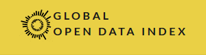

Laporan Global Open Data Index: Peran Lisensi Terbuka di Bidang Data Terbuka pada Tahun 2017
Artikel ini merupakan terjemahan dari artikel “The state of open licensing in 2017” yang dipublikasikan oleh Global Open Data Index (GODI).
Pertama-tama, artikel ini akan membahas apa itu lisensi terbuka dan apa kegunaannya dalam penyediaan data terbuka. Penulis artikel, Danny Lämmerhirt and Freyja van den Boom, kemudian memberikan 10 rekomendasi untuk diperhatikan oleh para pegiat data terbuka dalam memberikan advokasi dalam penyediaan data terbuka, khususnya terkait pelisensian data terbuka.

Data terbuka harus dapat digunakan kembali oleh siapapun, untuk kepentingan apapun, dan dapat diakses secara gratis oleh para penggunanya. Namun, terkadang peraturan-peraturan yang ada memblokade proses penggunaan data tersebut.
Pihak manapun yang hendak menggunakan data yang disediakan perlu mengetahui bahwa mereka berhak untuk menggunakan data tersebut. Para peneliti tidak akan menggunakan data milik orang lain jika mereka tidak yakin bahwa mereka tidak sedang melanggar hak cipta. Sebagai contoh, seseorang membutuhkan data-data tentang pajak yang dibayarkan oleh korporasi multinasional di berbagai negara untuk kemudian dibuatkan visualisasinya. Orang ini tidak akan dapat melakukan hal tersebut, kecuali mereka mengetahui lisensi (model perizinan. Red) apa yang diterapkan pada kumpulan data tersebut. Penerapan lisensi terbuka dengan ketentuan paling bebas yang diikuti dengan penyediaan penjelasan izin penggunaan atas diterapkannya lisensi tersebut, sangat dibutuhkan dalam proses pemanfaatan data.
Berdasarkan penelitian yang dilaksanakan GODI pada tahun 2016-2017, keberhasilan penerapan lisensi terbuka pada kumpulan-kumpulan data masih jauh dari sempurna. Penggunaan lisensi terbuka oleh lembaga pemerintahan dalam penyediaan data masih sangat minim. Yang banyak terjadi adalah penerapan peraturan yang tidak mendukung keterbukaan dalam penyediaan data oleh lembaga-lembaga pemerintahan tersebut.
Apa itu lisensi terbuka?
Sesuai dengan penjelasan yang disebutkan oleh Open Definition, sekumpulan data dianggap terbuka secara legal “jika data-data tersebut disajikan di bawah peraturan yang memperbolehkan penggunaan secara bebas”. Suatu lisensi dapat dianggap sebagai lisensi terbuka jika ketentuan-ketentuannya sesuai dengan penjelasan dari Open Definition 2.1. Termasuk persyaratan-persyarat spesifik seperti:
- Ketentuan lisensi tidak boleh diskriminatif;
- Tidak ada ketentuan yang mewajibkan pengguna mengeluarkan sejumlah biaya untuk mengakses obyek yang dilisensikan;
- Dan memperbolehkan pendistribusian ulang, serta pemodifikasian ulang terhadap obyek yang dilisensikan.
Mengapa lisensi terbuka dibutuhkan?
Suatu kumpulan data merupakan obyek perlindungan hak cipta.
Hak cipta memberikan hak eksklusif kepada pencipta atau pemegang hak cipta atas ciptaan yang diciptakannya. Pihak lain diwajibkan untuk memperoleh izin langsung dari pencipta atau pemegang hak cipta jika ingin menggunakan ciptaan-ciptaan tersebut.
Di dalam konsep hak cipta, terdapat beberapa pengecualian dan pembatasan yang memungkinkan pengguna untuk menggunakan ciptaan tanpa izin langsung pencipta atau pemegang hak cipta. Misalnya, suatu peraturan perundang-undangan menjabarkan dengan jelas ciptaan-ciptaan yang tidak termasuk obyek perlindungan hak cipta atau dianggap sebagai milik publik. Ciptaan-ciptaan tersebut kemudian dapat digunakan secara bebas tanpa izin untuk kepentingan apapun. Bahkan, jika suatu ciptaan merupakan obyek perlindungan hak cipta, pencipta atau pemegang hak cipta dapat menerapkan model lisensi tertentu yang memuat ketentuan bahwa penggunaan ciptaan tersebut tidak perlu mengikuti apa yang dinormakan oleh Undang-Undang.
Perlu disadari bahwa beberapa negara memberikan perlindungan hukum pada kumpulan data yang membatasi penggunaan atau pemanfaatan data-data dari kumpulan data tersebut. Oleh karena itu, kita perlu memerhatikan ketentuan perundang-undangan setiap negara terhadap kumpulan data.
Karena terdapat data-data yang dibagikan dalam bentuk laporan tertulis maupun gambar, yang merupakan obyek perlindungan hak cipta, pelisensian data menjadi hal yang perlu diperhatikan. Pelisensian data yang jelas dapat membantu proses pemanfaatan data. Pengguna seketika dapat mengetahui apakah data yang akan digunakan itu menerapkan ketentuan hak cipta yang bersifat membatasi atau tidak. Lembaga pemerintahan sebaiknya secara jelas menjabarkan apakah data yang mereka sediakan bukan merupakan obyek perlindungan hak cipta atau menerapkan lisensi yang mengecualikan data tersebut dari perlindungan hak cipta yang normatif.
-
Jika data-data yang disediakan bukan merupakan obyek perlindungan hak cipta atau milik publik, artinya ketentuan CC0 Dedikasi Domain Publik dapat diterapkan pada data-data tersebut.
-
Jika data-data yang disediakan merupakan obyek perlindungan hak cipta, artinya lisensi terbuka seperti lisensi Creative Commons Atribusi (CC BY) dapat diterapkan untuk meningkatkan daya guna dan interoperabilitas data-data tersebut.
Penggunaan lisensi Creative Commons atau lisensi Open Data Commons direkomendasikan dalam praktik penyediaan data terbuka.
Banyak lembaga pemerintahan yang telah menerapkan salah satu dari 6 jenis lisensi Creative Commons. Sedangkan yang lain memilih untuk membuat model pelisensian datanya sendiri atau kondisi penggunaan dengan kandungan ketentuan sama atau serupa dengan lisensi-lisensi terbuka yang telah ada. Namun, pertumbuhan ragam lisensi-lisensi terbuka yang dibuat sendir oleh lembaga-lembaga ini menuai kritik. Ketentuan yang berbeda-beda ini menjadi problematis dari sudut pandang pengguna karena menjadi salah satu penghambat interoperabilitas data. Ketentuan-ketentuan ini mengandung informasi yang tidak diperlukan pengguna, serta mengurangi daya guna data, dan menghambat proses penggunaan kembali data. Lisensi Creative Commons ada untuk mengatasi masalah-masalah ini, dengan memberikan pemerian yang jelas terkait hak penggunaan. Keberadaan lisensi ini dimaksudkan untuk memudahkan aktivitas berbagi dan pemanfaatan ciptaan, dalam hal ini data.
Peran Lisensi Terbuka di Bidang Data Terbuka pada Tahun 2017
Hasil pemeriksaan GODI dari tahun 2016-2017 menunjukan bahwa hanya 38 persen dari dari kumpulan data yang layak, telah menggunakan lisensi terbuka. (Angka ini berubah menjadi 11 persen di penghitungan akhir yang dipublikasikan pada tanggal 15 Juni 2017).
Lisensi-lisensi lain mengandung ketentuan yang banyak membatasi penggunaan data seperti larangan untuk penggunaan secara komersial, serta larangan pemodifikasian data.
Ketika lisensi terbuka telah diterapkan pada suatu kumpulan data, praktek penerapan lisensi yang baik ditak dipatuhi
Dari kasus-kasus yang ditemukan oleh tim peneliti GODI, mayoritas lembaga pemerintahan hanya memberlakukan peraturan dalam bentuk “ketentuan penggunaan” daripada lisensi hak cipta yang spesifik. Lisensi terbuka lembaga pemerintah dan lisensi Creative Commons jarang digunakan. Penerapan lisensi buatan sendiri dapat memikulkkan persyaratan tambahan kepada pengguna, seperti:
-
Mensyaratkan penyebutan atribusi yang spesifik terhadap penerbit data;
-
Menambah klasus yang menyebabkan ketidakjelasan terkait penggunaan dan pemodifikasian data oleh pengguna;
-
Pengguna wajib mengadaptasi atau membuat perbandingan antara ketentuan lisensi tersebut dengan hukum yang berlaku di negaranya.
Sejauh ini kami menemukan ketentuan-ketentuan yang saling bertentangan. Ketentuan-ketentuan ini nantinya berpotensi meningkatkan risiko sengketa, khususnya jika pihak pengguna hendak menggunakan suatu kumpulan data untuk kepentingan komersial. Selain itu, kami juga menemukan ketentuan-ketentuan yang ambigu di dalam lisensi tersebut. Ambiguitas tersebut dapat menyebabkan kebingungan daripada pencerahan. Sebagai contoh, ketentuan yang melarang penggunaan data “secara melanggar hukum”. (Anda dapat membaca dikusinya di tautan ini. Red)
Lisensi terbuka yang telah menjadi standard telah berhasil mengurangi ambiguitas serta memberikan pemahaman kepada pengguna tentang hak penggunaan. Banyak dari lisensi buatan sendiri dan “ketentuan penggunaan” tersebut mengandung ketentuan yang tidak menjelaskan data mana yang mereka lindungi. Artinya, beberapa lembaga pemerintahan memang bermaksud untuk membatasi penggunaan beberapa bagian data yang terdapat di suatu kumpulan data. Lembaga pemerintahan direkomendasikan untuk menerangkan dengan lebih jelas bagian mana dari suatu kumpulan data yang dapat digunakan dan mana yang tidak.
Lisensi buatan sendiri tidak memberikan pemerian yang jelas pada data yang mana ketentuannya diberlakukan.
Setiap penyajian data di suatu laman seharusnya ditandai dengan ketentuan lisensi yang berlaku terhadap penggunaan data tersebut. Sebagai contoh, pemerintah Meksiko menyajikan data tentang pembelian yang dilaksanakan oleh pemerintah melalui Compranet, situs resmi pemerintah Meksiko yang khusus menyajikan informasi terkait hal tersebut. Lisensi terbuka memang diterapkan pada butir-butir data-data yang disediakan, namun situs tempat diumumkannya informasi tersebut tidak mencantumkan secara jelas bahwa butir-butir data tersebut berada di bawah ketentuan suatu lisensi terbuka. Selain itu, pemerintah Meksiko juga menyajikan butir-butir data yang sama di situs datos.gob.mx yang juga menerapkan lisensi terbuka. Menurut informasi yang didapatkan oleh peneliti GODI dari pejabat lembaga pemerintah terkait, di manapun butir data disajikan, berlaku lisensi terbuka dengan ketentuan yang sama terhadap data-data tersebut. Meskipun terdapat pertanyaan resmi, pencantuman penjelasan lisensi yang baik, misalnya, dengan juga memberikan tautan terhadap lisensi, tetap diperlukan untuk menjamin hak penggunaan para pengguna data. Selain itu, sangat direkomendasikan untuk menyertakan isi ketentuan lisensi pada butir data yang dapat diunduh, untuk selalu mengecek apakah tautan terhadap lisensi, dan segera memperbaikinya jika tautan tersebut sudah tidak dapat diakses.
Ketidaksesuaian antara data yang disajikan dengan “ketentuan penggunaan” yang diterapkan menghambat proses penafsiran ketentuan oleh pengguna
Pengguna sebaiknya membandingkan teks “ketentuan penggunaan” dengan definisi yang ada di Open Definition untuk memastikan hak penggunaan yang dimilikinya. Masalah akan timbul jika tidak tersedia pemerian yang jelas atau versi terjemahan lisensi yang berlaku bagi setiap pengguna. Jika terjemahan tidak tersedia, maka pengguna harus menerjemahkannya terlebih dahulu dan apabila teks lisensi formatnya tidak terbaca oleh mesin, pengguna tidak dapat menggunakan jasa penerjemahan yang ada secara daring. Hal-hal ini dapat meningkatkan potensi sengketa dari kesalahpahaman terhadap “ketentuan penggunaan” data. Jika seorang ahli penyediaan data terbuka tidak mampu menentukan status hak cipta suatu kumpulan data tertentu, apalagi orang-orang yang hanya menjadi pengguna data terbuka. Untuk mengetahui statsu hak cipta suatu ciptaan diperlukan pengetahuan yang cukup mendalam tentang hak cipta, suatu hal yang selalu dihindari organisasi penyedia lisensi terbuka yang selama ini berusaha menghadirkan kesederhanaan.
Pemberitahuan hak cipta (logo (C)) di laman web dapat membingungkan pengguna.
Dalam beberapa kasus, pengguna situs tidak dapat menemukan “ketentuan penggunaan” maupun lisensi yang jelas di suatu situs penyajian data oleh lembaga pemerintahan. Tidak disediakannya ketentuan penggunaan secara jelas, menggiring pengguna untuk merujuk pada lambang (C) yang biasanya ada di bagian bawah situs web. Lambang pengganti pernyataan bahwa suatu obyek dilindungi hak cipta secara penuh ini, tidak selalu berlaku pada data atau konten yang disediakan suatu situs. Karena biasanya lambang ini hanya berlaku pada situs web yang digunakan sebagai kanal untuk menyajikan konten-konten terbuka, dalam hal ini oleh lembaga pemerintah.
**10 rekomendasi untuk pihak penyedia data **
Based on our finding we prepared 10 recommendations that policymakers and other government officials should take into account:
Tim peneliti GODI dapat memberikan setidaknya 10 rekomendasi kepada pembuat kebijakan atau pejabat pemerintah berdasarkan temuan-temuan yang telah diutarakan di atas:
-
Apakah data atau kumpulan data tersebut merupakan obyek perlindungan hak cipta? Often government data does not fall under copyright protection and should not be presented as such. Biasanya data yang disediakan pemerintah bukan merupakan obyek perlindungan hak cipta dan seharusnya bukan. Pemerintah harus dapat memilah hal-hal mana yang termasuk sebagai obyek perlindungan hak cipta dan mana yang tidak.
-
Gunakan lisensi-lisensi terbuka yang telah menjadi standar. Lisensi terbuka mudah dipahami dan sebaiknya dijadikan pilihan pertama. Open Definition menyediakan lisensi-lisensi terbuka yang tidak saling bertentangan satu sama lain.
-
Dalam beberapa kasus, lembaga pemerintah memilih untuk menggunakan lisensi terbuka buatannya sendiri. Lisensi ini seharusnya mengandung ketentuan yang membebaskan dan tidak bertentangan dengan ketentuan lisensi yang lain. Untuk memastikan kesesuaiannya, pihak pembuat lisensi dapat meminta pemeriksaan dan persetujuan dari Open Definition.
-
Dengan jelas menunjuk data apa saja yang dilindungi oleh lisensi yang diterapkan dan sediakan informasi tentang kapan data tersebut tersedia.
-
Clearly, publish open licensing details next to the data. Sediakan teks lisensi yang diterapkan di laman yang sama dengan data yang disediakan. Lisensi tersebut harus nampak jelas dan dicantumkan pada berkas data yang dapat diunduh serta dapat dibaca manusia dan mesin.
-
Pastikan tautan terhadap lisensi yang dicantumkan pada data tidak mati, supaya pengguna dapat menmbaca ketentuan lisensi kapan saja.
-
Tampilkan dengan jelas versi lisensi dan sediakan contoh bagaimana data yang tersedia digunakan.
-
Jika memungkinkan, hindari penerapan ketentuan yang membatasi dan bertentangan dengan standar lisensi terbuka.
-
Lakukan evaluasi pada desain situs web dan hindari pencantuman pemberitahuan hak cipta (C) yang membingungkan pada bagian bawah situs web serta “ketentuan penggunaan” yang tidak perlu.
-
Jika data yang disediakan pemerintah adalah milik publik sejak awal, jelaskan apa arti hal tersebut bagi pengguna data.
Posisi hukum data di mata rezim Hukum Hak Cipta Indonesia
Menurut Pasal 41 Undang-Undang No. 28 Tahun 2014 Tentang Hak Cipta (UUHC 2014), “temuan atau data walaupun telah diungkapkan” bukan merupakan obyek perlindungan hak cipta. Artinya setiap penggunaan data, dengan pemahaman yang sesuai dengan maksud Pasal 41 UUHC 2014 di Indonesia, tidak perlu mengikuti konsep perlindungan hukum terhadap obyek perlindungan hak cipta dari UUHC 2014. Ketika suatu ciptaan bukan merupakan obyek perlindungan hak cipta, maka belum tentu ciptaan tersebut berstatus domain publik. UUHC 2014 tidak menetapkan dengan tegas status dari ciptaan yang bukan obyek merupakan perlindungan hak cipta. Artinya kita dapat mencoba membuat tafsiran bahwa semua orang dapat menggunakan ciptaan tersebut tanpa izin langsung dari penciptanya dan tanpa perlu membayarkan royalti atas penggunaan ciptaan tersebut secara komersial. Dengan pengecualian bahwa ciptaan, dalam hal ini data, yang hendak kita gunakan bukan merupakan obyek perlindungan hukum UU Perlindungan Data Pribadi, maupun butiran data atau kumpulan data yang mengandung rahasia negara.
UUHC 2014 menempatkan database atau basis data sebagai obyek perlindungan hak cipta. Yang dimaksud dengan basis data menurut UUHC 2014 adalah “kompilasi data dalam bentuk apapun yang dapat dibaca oleh komputer atau kompilasi dalam bentuk lain, yang karena alasan pemilihan atau pengaturan atas isi data itu merupakan kreasi intelektual. Pelindungan terhadap basis data diberikan dengan tidak mengurangi hak para Pencipta atas Ciptaan yang dimasukan dalam basis data tersebut”. Kita dapat menafsirkan bahwa, misalnya, data-data yang dikumpulkan dalam satu tempat dan disajikan dalam bentuk infografis maupun data-data terbaca mesin yang disajikan melalui suatu program komputer, merupakan obyek perlindungan hak cipta. Ketika suatu ciptaan menjadi obyek perlindungan hak cipta, maka pengguna ciptaan wajib mendapatkan izin langsung pencipta dan membayar sejumlah royalti kepada pencipta ketika terdapat penggunaan secara komersial.
Hal-hal tersebut dapat dikecualikan jika ciptaan berupa basis data tersebut menerapkan lisensi terbuka, lisensi Creative Commons Atribusi (CC BY) dan Creative Commons Atribusi-Berbagi Serupa (CC BY-SA) atau Open Data Base License (ODbl) misalnya. Lisensi-lisensi ini membebaskan pengguna ciptaan untuk menggunakan ciptaan tanpa izin langsung dan kewajiban membayar royalti terhadap pencipta. Pengguna ciptaan diwajibkan untuk menyebutkan sumber dan/atau nama pencipta pada setiap penggunaan, dan jika terdapat penggubahan atas ciptaan berlisensi CC BY-SA atau ODbl, pengguna diwajibkan untuk menerapkan lisensi yang sama atau lisensi dengan ketentuan yang serupa.
Di Indonesia, Anda dapat menemukan praktek penerapan lisensi terbuka pada basis data-basis data yang disajikan oleh Satu Data Indonesia atau portal Jakarta Open Data. Anda juga dapat menemukan data-data atau basis data tentang Indonesia berlisensi CC0 di Wikidata. Kegiatan-kegiatan berkaitan tentang data dan pengolahannya serta penyajian data terbuka di Indonesia banyak disokong oleh organisasi-organisasi seperti Data Science Indonesia dan Open Data Labs Jakarta. Hal-hal spesifik seperti data-data maupun basis data yang berkaitan dengan peta biasanya merupakan ruang lingkup kegiatan dari HOT-OSM Indonesia. Apabila Anda tertarik untuk mengetahui lebih lanjut mengenai perkembangan kegiatan terkait data terbuka di Indonesia, Anda dapat mengunjungi tautan yang kami sediakan pada setiap nama organisasi yang kami sebutkan. Pada tautan berikut ini Anda dapat melihat hasil pemeriksaan GODI terkait penyajian data terbuka dan penerapan lisensi terbuka pada data atau basis data di Indonesia.
Tags:
Oleh: Hilman Fathoni
21 Jul 2017Kategori:
Berita Terbaru
- Lokakarya Hak Cipta dan Lisensi Creative Commons di Pekanbaru
- Pengumuman Resmi: Hasil Akhir Training of Trainers Creative Commons Indonesia
- Literatur tentang Model Bisnis Terbuka "Made With CC"
- Data dan Artikel Ilmiah Terbuka dari PLOS!
- Konten Format Model 3 Dimensi Berilsensi CC di Platform Sketchfab